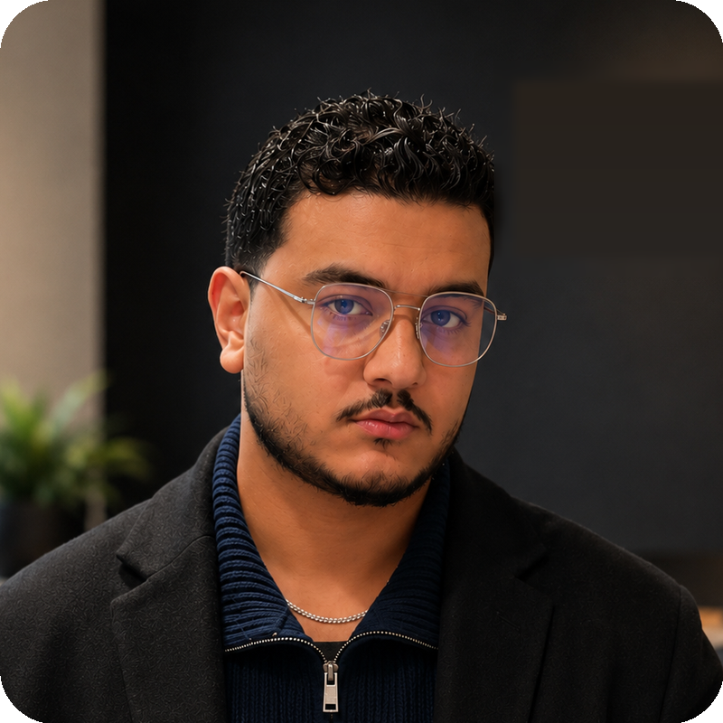

Formé en Data & Intelligence Artificielle à l'École Hetic (Paris), passé par le reporting chez Mamda Assurance et le data engineering chez Techwin Services, Ali a conçu et développé l'intégralité de la plateforme GéoDetect : entraînement du modèle IA, pipeline de traitement, cartographie et rapports.
Une connaissance directe du marché marocain et un réseau local dans le BTP pour construire les premiers partenariats terrain.